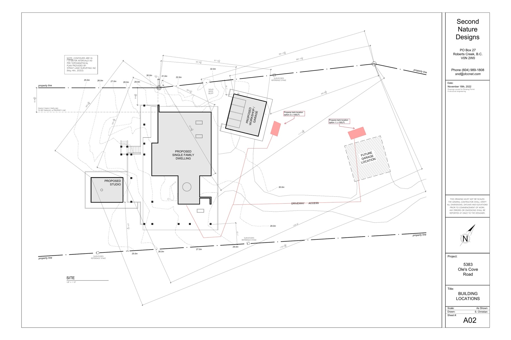
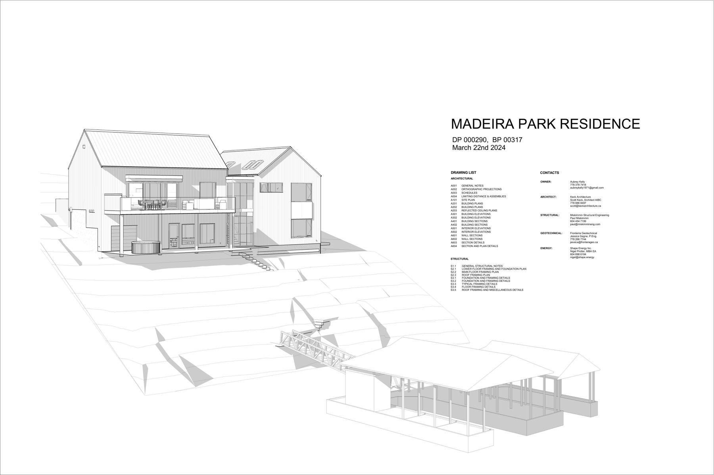
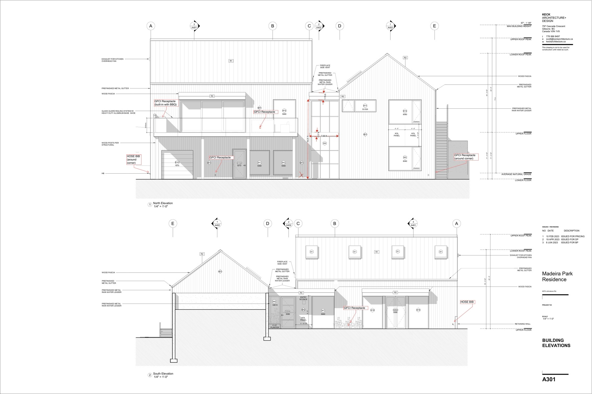
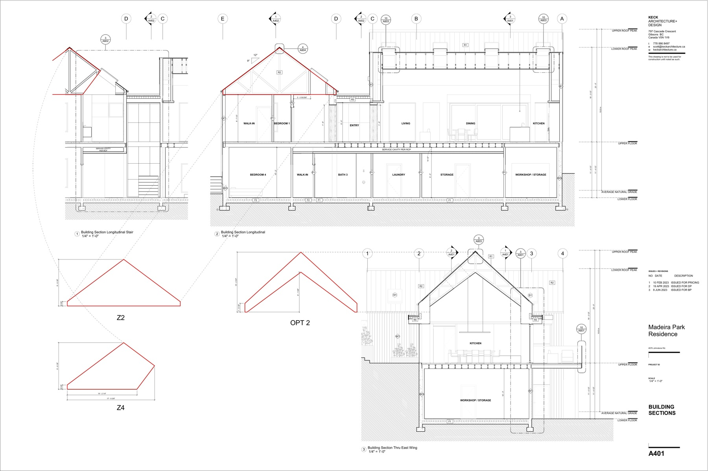
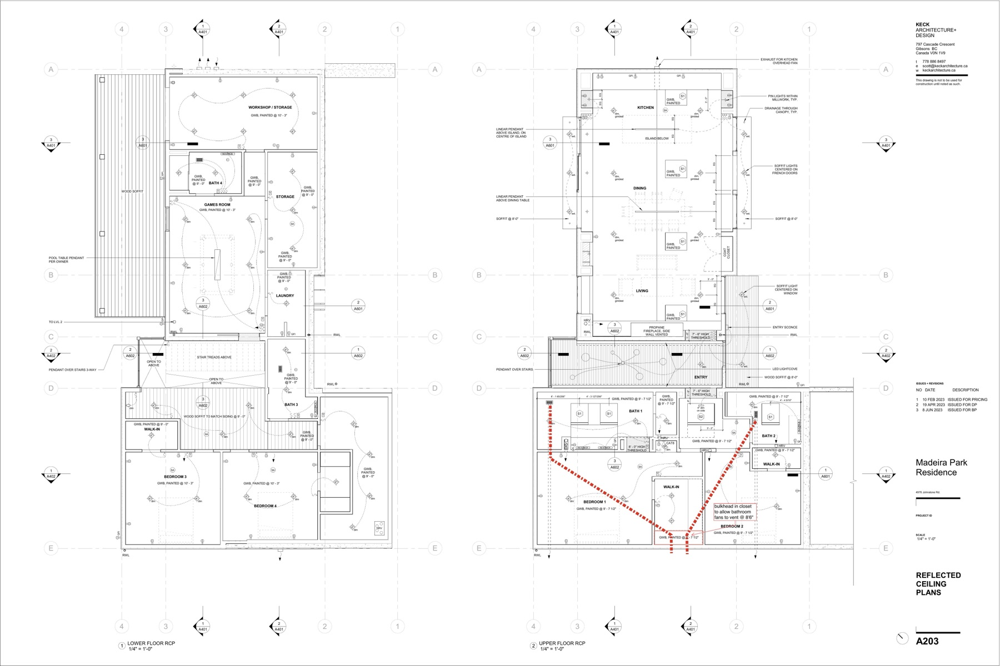

My read of both sets of plans, what I still need you to fill in, and how I want to shoot both projects over two days. Treat this as a working document — mark it up where I've got it wrong.
A finished house with the Wilsons on site. I haven't been on this site yet, so a lot of the planning gets finalised on our pre-shoot call — the story behind the design, the decisions I can't pull from the drawings, how the clients actually use the place.

Twenty minutes, any time before the 14th. What I'd want to ask:

This is a designed house, not a spec build. The drawings are clean and restrained — Keck's signature. Worth photographing as architecture, not just as a listing.
Two gabled wings — east and west — connected by a lower middle section that holds a double-height staircase. A long run of skylights brings light down into the plan from above. The east wing has a covered upper deck on wood posts, with a glass guardrail, looking out over the water. The only exterior materials are vertical wood siding and a standing-seam metal roof. No decorative trim, nothing fussy.
From the road, the house reads almost like a simple barn. From the water, the glass-guarded deck and the open east-wing elevation give it a clearly modern feel.



No landscaping, no furniture — that's the reality of a listing shoot. An empty interior is going to read cold. There's nothing inside yet to soften it: no furniture, no art, no plants.
My take: shoot the house honest first. The one piece of live staging worth doing is the sailboat at the dock — it anchors the waterside exterior and makes the place feel lived-in.
Digital furniture for the interiors is a post-production job, not a shoot-day decision. Once we have the clean empty frames, you pick three to five we stage digitally for the listing. That way you end up with two edits off the same shoot: a clean architectural portfolio set, and a staged MLS set.
Fee: $3,000 + GST per project. Two projects, $6,000 + GST total. Any vendor cost-share reduces your side, it doesn't add to the total.
Send back redlines on anything you want changed. Let's lock the pre-shoot call before the 14th. The schedule holds as long as the weather does.
Book the call